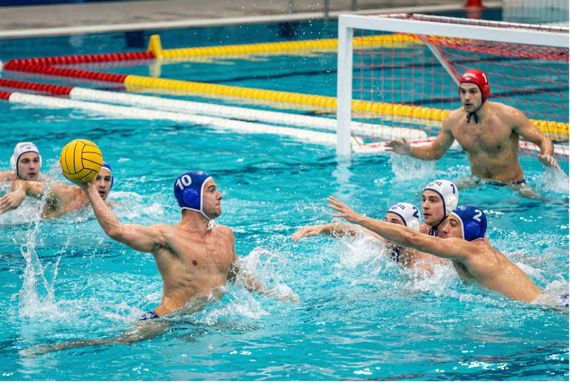

Водное поло — весьма жёсткая контактная игра. Одновременно на поле против друг друга играют две команды. Каждая команда должна состоять из семи игроков, одним из которых должен быть вратарь, играющий во вратарской шапочке, и не более шести резервных игроков, которые могут быть использованы как запасные. Для игры свойственны частые замены игроков на поле запасными.
 |
Цель игры для каждой команды — действуя согласно тактическим схемам, забросить максимальное количество мячей в ворота соперника. Все действия игроков по отбору мяча у соперника, степень грубости нарушений, удаление игроков и все прочие игровые моменты полностью регулируются правилами водного поло. |